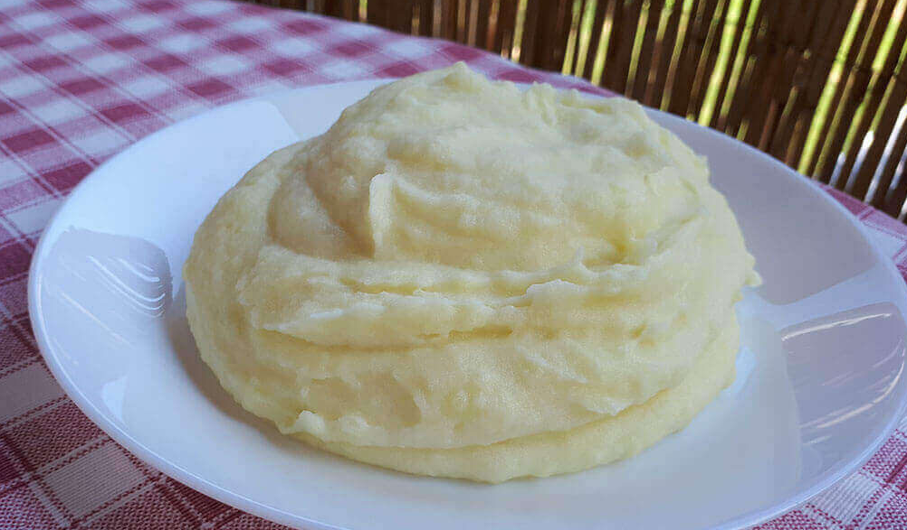

Mashed Potatoes

Description
This is a very easy recipy that does not need much to explain
Boil potatoes in salted water until soft.
Drain the potatoes and then add a stick of butter, salt, pepper and milk.
Mash until done. Add season to taste.
Ingredients
- 500 grams of Potatoes
- 1 stick of butter
- 1 teaspoon of salt
- 1 teaspoon of pepper
- 150 ml of milk
Steps
- Peel and boil potatoes
- Drain the potatoes once soft
- Add the butter, milk, salt and pepeer
- mash until done